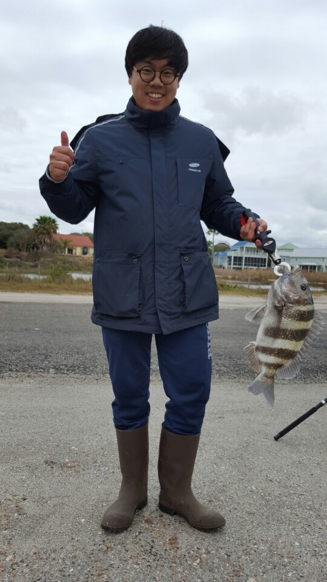

Rockport Fishing for sheeps head
The sheepshead, is a marine fish that grows to 76 cm (30 in), but commonly reaches 30 to 50 cm (10 to 20 in). It is deep and compressed in body shape, with five or six dark bars on the side of the body over a gray background. It has sharp dorsal spines. Its diet consists of oysters, clams, and other bivalves, and barnacles, fiddler crabs, and other crustaceans. It has a hard mouth, with several rows of stubby teeth – the frontal ones roughly resembling human teeth – which help crush the shells of prey.
 As sheepshead feed on bivalves and crustaceans, successful baits include shrimp, sand fleas (mole crabs), clams, fiddler crabs, and mussels. Sheepshead have a knack for stealing bait, so a small hook is necessary. Locating sheepshead with a boat is not difficult: Fishermen look for rocky bottoms or places with obstructions, jetties, and the pilings of bridges and piers. The average weight of a sheepshead is 1.4 to 1.8 kg (3 to 4 lb), but some individuals reach the range of 4.5 to 6.8 kg (10 to 15 lb).
As sheepshead feed on bivalves and crustaceans, successful baits include shrimp, sand fleas (mole crabs), clams, fiddler crabs, and mussels. Sheepshead have a knack for stealing bait, so a small hook is necessary. Locating sheepshead with a boat is not difficult: Fishermen look for rocky bottoms or places with obstructions, jetties, and the pilings of bridges and piers. The average weight of a sheepshead is 1.4 to 1.8 kg (3 to 4 lb), but some individuals reach the range of 4.5 to 6.8 kg (10 to 15 lb).
The sheepshead is found in coastal waters along the western Atlantic, from Nova Scotia to Brazil, but the greatest concentration is around southwest Florida. Although the Sheepshead Bay section of Brooklyn, in New York City, was named after the fish, it is now rarely found that far north.